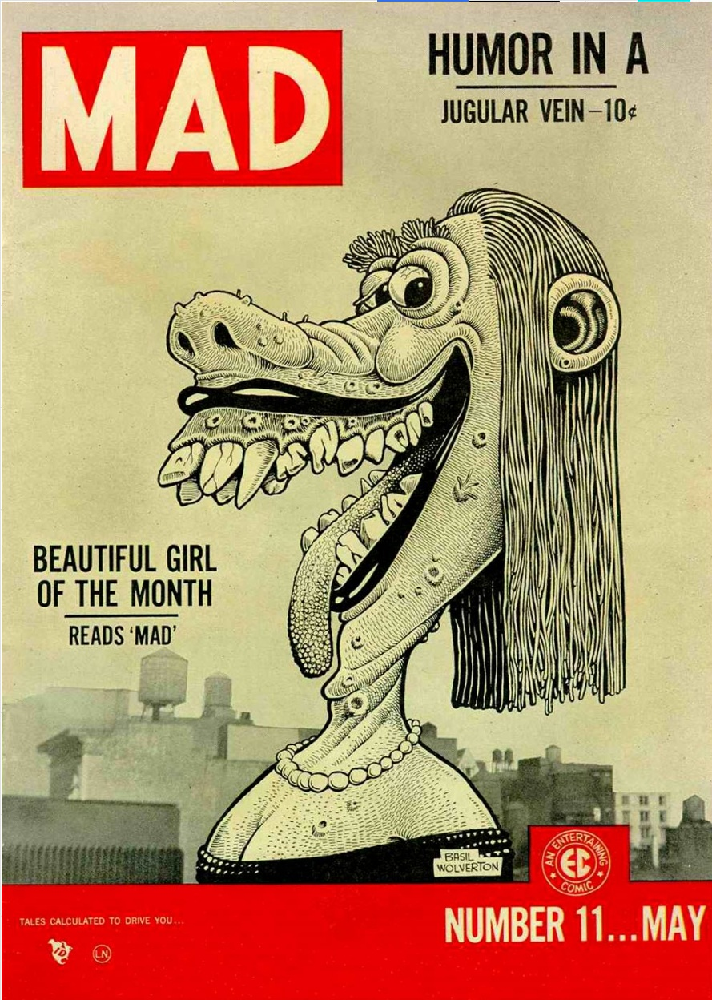
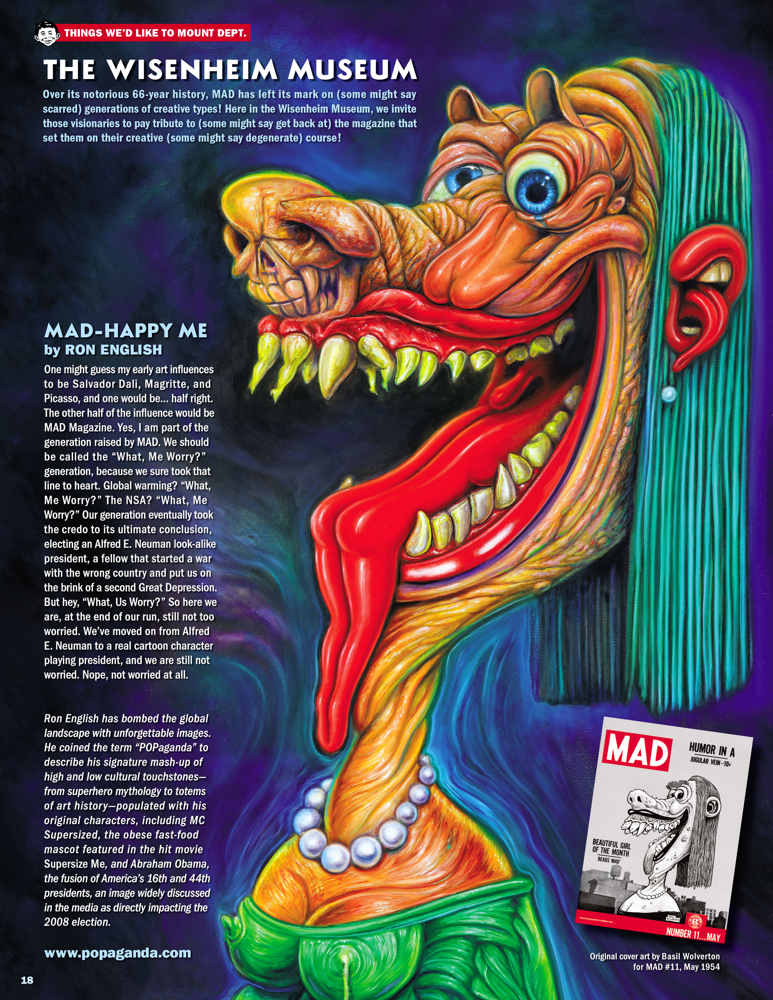

Notes
This work appears in MAD Magazine (2018 series) #1 as Ron English’s contribution to The Wisenheim Museum; a page scan is available here.
It also references Basil Wolverton’s cover of Mad no. 11 (1954); a representative image is available here.

Ancillary Documentation
